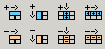

When the <TD> tag is selected, the Cell Inspector is displayed. Besides cell attributes, this inspector allows you to manage rows, columns and cells, through a special group of buttons:
Increase Colspan
The “colspan” attribute can be set to cause a single table cell
to span more than one column. In order to perform this action, click on
the Increase Colspan button. Each click expands the current cell to one
more column.
Decrease Colspan
If the cell spans only one column, and you click on the Decrease Colspan
button, the KTML3 editor will display an error message: “Cell can't
be divided. Add another cell instead”. Otherwise, the span will be
gradually removed each time you click on Decrease Colspan, such that each
cell corresponds to a single column.
Increase Rowspan
The “rowspan” attribute can be set to
cause a single table cell to span more than one row. In order to
perform this action, click on the
Increase Rowspan button from the Property Inspector. Each click expands
the current cell to one more row.
Decrease Rowspan
If the cell spans only one row, and you click on the Decrease Rowspan
button, the KTML3 editor will display an error message: “Row Span
is already set to one”. Otherwise, cells spanning more than one row
will be divided, such that each cell corresponds to a single row.
Add Column
Another important feature of the KTML3 editor is the possibility of adding
new columns to tables. You should place the cursor inside a cell and
click on the Add Column button. The new column is inserted to the left
of the
current one.
Remove Column
You can also delete an existing column from a table. To
do that, place the cursor inside one of the column's cells and click
on the Remove Column button.
Add Row
The “Add Row” feature is very similar to the “Add Column” one.
You should place the cursor inside a cell and click on the Add Row button.
The new row is inserted above the current one.
To remove a row, place the cursor inside one of the row's cells and click on the Remove Row button.